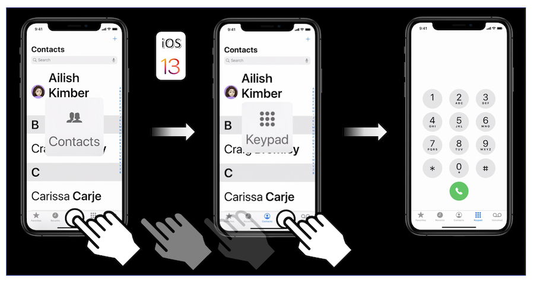
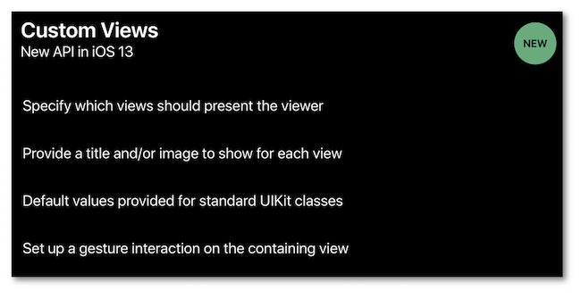
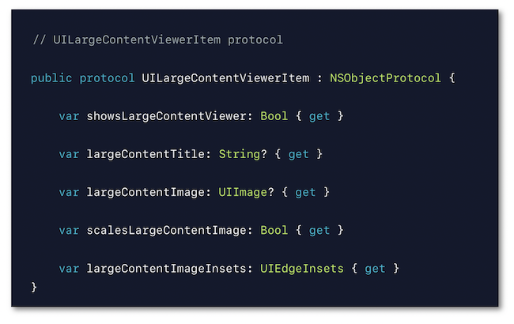

WWDC 2019 : Large Content Viewer
Cette présentation visualisable sur le site développeur officiel d'Apple (session 261) détaille les nouveautés iOS 13 de la fonctionnalité Large Content Viewer utilisée par les personnes souhaitant visualiser l'écran avec une taille de police personnalisée et implémentée de concert avec le Dynamic Type depuis iOS 11.

Les thèmes abordés ainsi que leur référence temporelle au sein de la vidéo sont décrits ci-dessous :
-
Dynamic Type (00:57)
-
Large Content Viewer (01:54)
-
Images (04:02)
-
Custom Views (04:52) ⟹ nouveauté iOS 13
-
Exemples (09:15)
Par la suite, selon la configuration de la présentation, le fait de cliquer sur un titre ou un temps indiqué permet d'ouvrir la vidéo Apple directement au moment spécifié.
Dynamic Type (00:57) #
Petit rappel sur la fonctionnalité Dynamic Type dont le but est de permettre l'adaptation graphique à la taille des polices modifiable dans les réglages utilisateurs.
Une explication détaillée de l'implémentation de cette fonctionnalité est disponible dans la partie guide pour les développeurs.
Large Content Viewer (01:54) #
Cette fonctionnalité iOS 11 disponible uniquement quand l'option Tailles de police plus grandes est activée permet de rendre très efficace le grossissement des éléments de barres (navigation, onglets...) pour les personnes souhaitant grossir la taille des polices à l'aide du Dynamic Type.
Le déclenchement de cette fonctionnalité s'effectue par un appui long sur l'élément concerné que l'on peut laisser glisser sur les éléments voisins pour les grossir à leur tour et finalement activer celui sur lequel on relève le doigt de l'écran.

Il est très important d'avoir à l'esprit que les modifications de taille liées au Dynamic Type doivent toujours être implémentées de façon P.R.I.O.R.I.T.A.I.R.E. : le Large Content Viewer n'est à utiliser qu'à partir du moment où l'élément graphique impacté ne peut pas répondre aux changements souhaités.
Images (04:02) #
Dans cette partie de la vidéo, toutes les caractéristiques des images à importer sont passées en revue pour obtenir une excellente définition du rendu après grossissement comme détaillé dans la partie guide pour les développeurs.
L'interface graphique de Xcode peut être utilisée conjointement à du code pour obtenir le résultat escompté.

Custom Views (04:52) #
En implémentant le Dynamic Type, iOS 13 rend possible un même rendu graphique pour un élément standard UIKit d'une barre (navigation, onglets...) et pour une UIView.

Le protocole UILargeContentViewerItem (05:35) définit toutes les informations nécessaires au Large Content Viewer ⟹ la classe UIView se conforme à ce protocole par défaut :

L'ajout d'une interaction tactile (06:52) est aussi nécessaire pour finaliser l'implémentation de cette fonctionnalité :

Quelques propriétés liées à cette interaction tactile (07:11) permettent d'obtenir et/ou de définir certains types de détails :
Pour finir, le delegate de cette interaction tactile contient un ensemble d'options (07:52) qui permettent de réaliser certaines actions :

Exemples (09:15) #
Le premier exemple concerne les éléments UIKit standards.
Le second exemple traite de classes personnalisées pour des boutons (09:53) dont certaines propriétés doivent être redéfinies pour une parfaite implémentation du Large Content Viewer.

Enfin, le dernier exemple détaille les modifications à apporter à un bouton ayant déjà une action prévue suite à un appui long (10:36) pour ne pas avoir de conflit avec le Large Content Viewer.